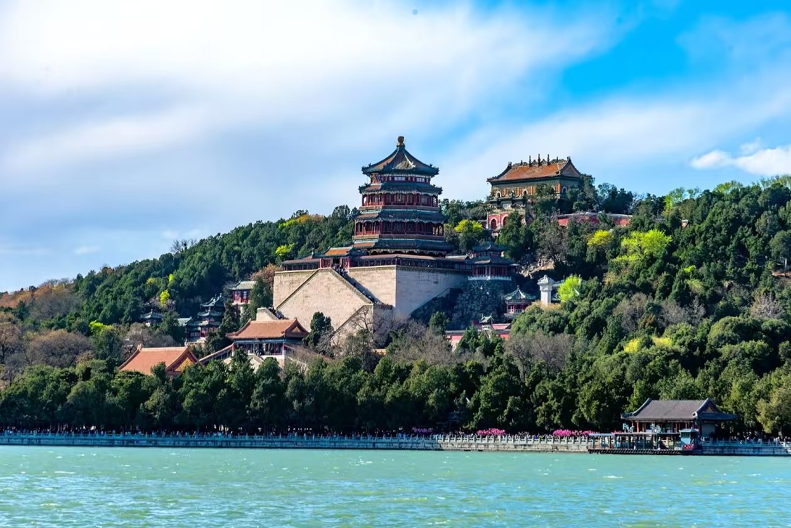

颐和园是中国清朝时期皇家园林，前身为清漪园，坐落在北京西郊，距城区15公里，占地约290公顷，与圆明园毗邻。它是以昆明湖、万寿山为基址，以杭州西湖为蓝本，汲取江南园林的设计手法而建成的一座大型山水园林，也是保存最完整的一座皇家行宫御苑，被誉为"皇家园林博物馆"。
颐和园始建于乾隆十五年（1750年），咸丰十年（1860年）被英法联军焚毁，光绪十四年（1888年）重建，改称颐和园。颐和园以万寿山和昆明湖为主体，园内有亭、台、楼、阁、廊、榭等不同形式的建筑3000余间，主要景点有佛香阁、长廊、石舫、苏州街、十七孔桥等。
颐和园集传统造园艺术之大成，借景周围的山水环境，饱含中国皇家园林的恢弘富丽气势，又充满自然之趣，高度体现了"虽由人作，宛自天开"的造园准则。建议游览路线：东宫门→仁寿殿→长廊→佛香阁→石舫→南湖岛→十七孔桥→新建宫门，建议游览时间3-4小时。
门票：旺季30元/人（联票60元），淡季20元/人（联票50元）
开放时间：6:30-18:00（旺季），7:00-17:00（淡季）
交通：地铁4号线北宫门站/西苑站